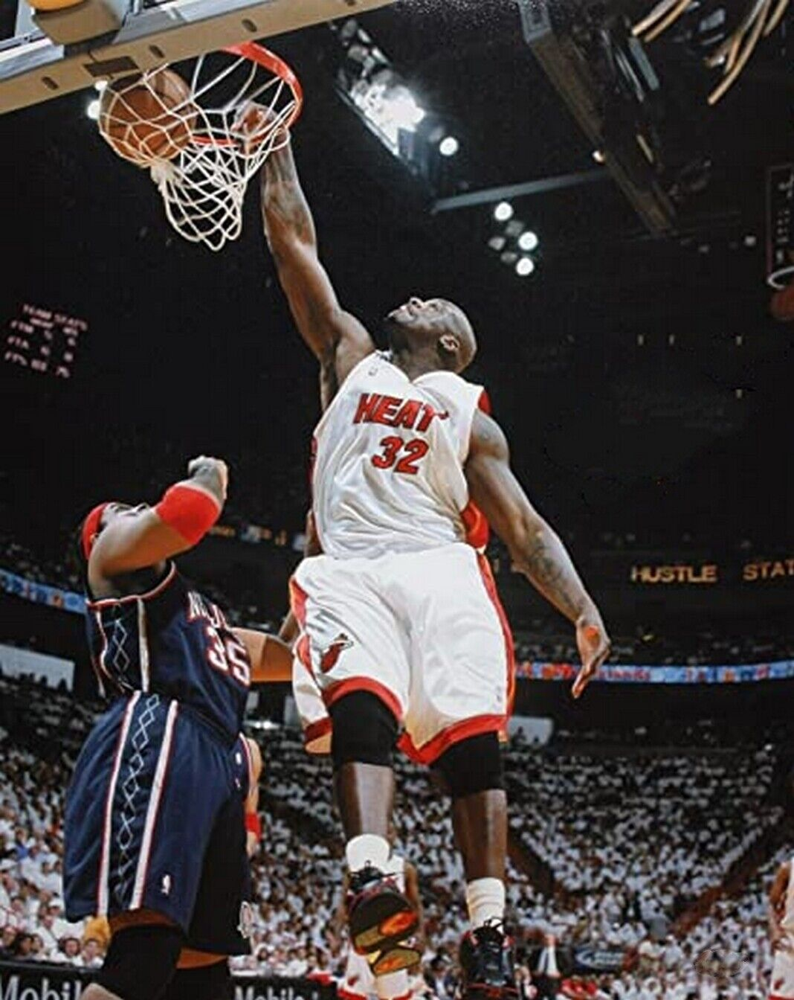

Shaquille O'Neal
O Dominador do Garrafão
4
Títulos
15
All-Star
Shaquille O'Neal foi uma força imparável na NBA. Sua combinação de força, tamanho e agilidade o tornaram um dos pivôs mais dominantes da história.


Com sua presença imponente, Shaq redefiniu o papel do pivô no basquete moderno.
Jogou por times como Lakers, Heat e Magic, sendo campeão com os Lakers e o Miami Heat.
Média de 23.7 pontos e 10.9 rebotes por jogo em sua carreira.
"Dominei porque ninguém conseguia me parar no garrafão."
- Estreia: 1992
- Times: Lakers, Heat, Magic, Suns, Celtics
- Altura: 2,16m
- Peso: 147kg
- Posição: Pivô
- Prêmios: MVP da NBA 2000
Além das quadras, Shaq é comentarista, empresário e figura carismática na mídia.
Participou de filmes, lançou álbuns de rap e é um verdadeiro ícone cultural.